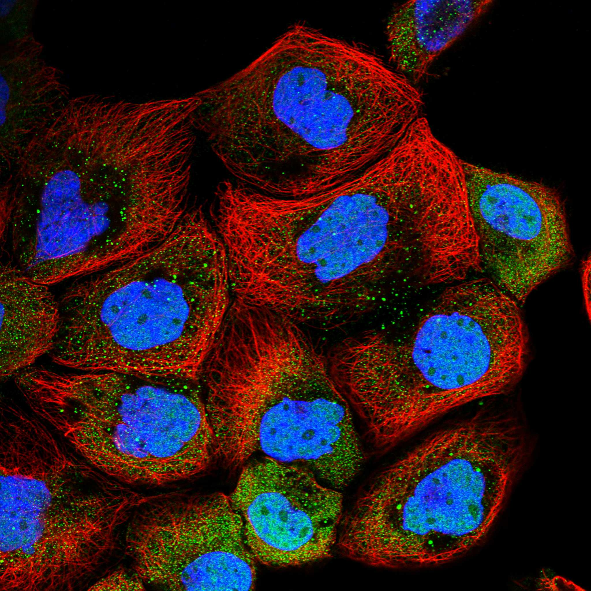
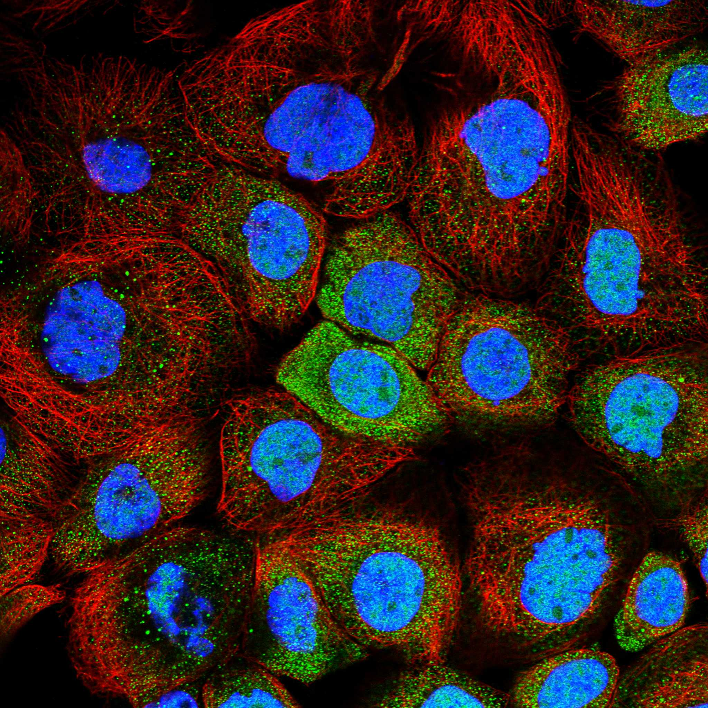
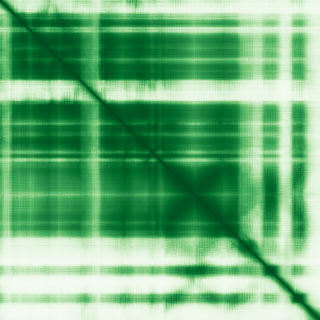

type: protein-evaluation gene: "CHMP7" date: 2026-05-29 tags: [protein-scout, nuclear-protein, evaluation] status: scored ---
CHMP7 核蛋白评估报告
1. 基本信息
| 项目 | 内容 |
|---|---|
| 基因名 / 别名 | CHMP7 / CHMP7 |
| 蛋白大小 | 453 aa / ~49.8 kDa |
| UniProt ID | Q8WUX9 |
| 评估日期 | 2026-05-29 |
2. 评分总览
| 维度 | 得分 | 满分 | 加权后 | 关键证据摘要 |
|---|---|---|---|---|
| 🔴 核定位特异性 | 6/10 | ×4 | 24 | UniProt Cytoplasm+Nuclear envelope + GO chromatin，核膜相关ESCRT |
| 📏 蛋白大小 | 10/10 | ×1 | 10 | 453 aa，200-800 aa最优区间，适合生化实验和结构解析 |
| 🆕 研究新颖性 | 8/10 | ×5 | 40 | PubMed=36篇 |
| 🏗️ 三维结构 | 8/10 | ×3 | 24 | 良好（pLDDT 76.0），69%有序 |
| 🧬 调控结构域 | 7/10 | ×2 | 14 | 新颖蛋白基线 |
| 🔗 PPI 网络 | 4/10 | ×3 | 12 | 0/30调控相关partners |
| ➕ 互证加分 | — | max +3 | 0 | 多库交叉验证 |
| 原始总分 | 127/183 | |||
| 归一化总分 | 69.4/100 |
3. 详细分析
3.1 核定位证据
| 来源 | 定位 | 可信度 |
|---|---|---|
| UniProt | Cytoplasm; Nucleus envelope; Nucleus envelope | — |
| GO Cellular Component | C:amphisome membrane; C:autophagosome membrane; C:chromatin; C:cytoplasmic side of plasma membrane; C:cytosol; C:ESCRT III complex; C:kinetochore; C:kinetochore microtubule | — |
| Protein Atlas (IF) | nucleoplasm+cytosol (Approved, A-431) | Approved |
 
结论: UniProt Cytoplasm+Nuclear envelope + GO chromatin，核膜相关ESCRT
3.2 蛋白大小评估
评价: 453 aa，200-800 aa最优区间，适合生化实验和结构解析
3.3 研究现状
| 指标 | 数值 |
|---|---|
| PubMed 总数 | 36 |
| Chromatin/epigenetics 比例 | 待深入文献分析 |
关键文献: 1. Di et al. (2024). "Micronuclear collapse from oxidative damage.". *Science*. PMID: 39208110 2. Coyne et al. (2021). "Nuclear accumulation of CHMP7 initiates nuclear pore complex injury and subsequent TDP-43 dysfunction in sporadic and familial ALS.". *Sci Transl Med*. PMID: 34321318 3. Al-Azzam et al. (2024). "Inhibition of RNA splicing triggers CHMP7 nuclear entry, impacting TDP-43 function and leading to the onset of ALS cellular phenotypes.". *Neuron*. PMID: 39486415 4. von et al. (2020). "LEM2 phase separation promotes ESCRT-mediated nuclear envelope reformation.". *Nature*. PMID: 32494070 5. Timmer et al. (2025). "LRRC59 cooperates with nuclear transporters to restrain the nuclear envelope repair machinery and safeguard genome integrity.". *Nat Commun*. PMID: 41387506 评价: PubMed 36 篇。非常新颖，研究空间充足。
3.4 三维结构分析
| 指标 | 数值 |
|---|---|
| AlphaFold 平均 pLDDT | 76.0 |
| 有序区域 (pLDDT>70) 占比 | 69.3% |
| pLDDT>90 占比 | 43.0% |
| pLDDT<50 占比 | 21.4% |
| 可用 PDB 条目 | 0 |
评价: AlphaFold高质量预测（pLDDT 76.0，69%有序），折叠域置信度高。
PAE 图: 
3.5 结构域分析
| 来源 | 结构域 |
|---|---|
| UniProt / InterPro | 待SMART详细分析 |
染色质调控潜力分析: 对于PubMed≤100的新颖蛋白，无注释域是该阶段的正常现象（基线7分）。待SMART分析后补充。
3.6 PPI 网络
实验验证互作 (IntAct, physical association):
| Partner | 方法 | PMID | 功能类别 | 调控相关？ | |||||||||||
|---|---|---|---|---|---|---|---|---|---|---|---|---|---|---|---|
| psi-mi:pa1b3_human(display_long) | uniprotkb:PAFAH1B3(gene name) | psi-mi:PAFAH1B3(display_short) | uniprotkb:PAFAHG(gene name synonym) | uniprotkb:PAF acetylhydrolase 29 kDa subunit(gene name synonym) | uniprotkb:PAF-AH subunit gamma(gene name synonym) | psi-mi:"MI:0398"(two hybrid po | pubmed:16189514 | imex:IM-16520 | mint:MINT-5217968 | 待分析 | 否 | ||||
| psi-mi:pa1b3_human(display_long) | uniprotkb:PAFAH1B3(gene name) | psi-mi:PAFAH1B3(display_short) | uniprotkb:PAFAHG(gene name synonym) | uniprotkb:PAF acetylhydrolase 29 kDa subunit(gene name synonym) | uniprotkb:PAF-AH subunit gamma(gene name synonym) | psi-mi:"MI:0397"(two hybrid ar | imex:IM-27438 | doi:10.1038/s41467-019-11959-3 | pubmed:31515488 | 待分析 | 否 | ||||
| psi-mi:chm4b_human(display_long) | uniprotkb:Chromatin-modifying protein 4b(gene name synonym) | uniprotkb:Vacuolar protein sorting-associated protein 32-2(gene name synonym) | uniprotkb:SNF7-2(gene name synonym) | uniprotkb:SNF7 homolog associated with Alix 1(gene name synonym) | uniprotkb:CHMP4B(gene name) | psi-mi:CHMP4B(display_short) | uniprotkb:C20orf178(gene name synonym) | uniprotkb:SHAX1(gene name synonym) | psi-mi:"MI:0096"(pull down) | pubmed:16856878 | imex:IM-24993 | 待分析 | 是 | ||
| psi-mi:chm4a_human(display_long) | uniprotkb:Chromatin-modifying protein 4a(gene name synonym) | uniprotkb:Vacuolar protein sorting-associated protein 32-1(gene name synonym) | uniprotkb:SNF7-1(gene name synonym) | uniprotkb:SNF7 homolog associated with Alix-2(gene name synonym) | uniprotkb:CHMP4A(gene name) | psi-mi:CHMP4A(display_short) | uniprotkb:C14orf123(gene name synonym) | uniprotkb:SHAX2(gene name synonym) | uniprotkb:CDA04(orf name) | uniprotkb:HSPC134(orf name) | psi-mi:"MI:0018"(two hybrid) | pubmed:16856878 | imex:IM-24993 | 待分析 | 是 |
| psi-mi:chm4b_human(display_long) | uniprotkb:Chromatin-modifying protein 4b(gene name synonym) | uniprotkb:Vacuolar protein sorting-associated protein 32-2(gene name synonym) | uniprotkb:SNF7-2(gene name synonym) | uniprotkb:SNF7 homolog associated with Alix 1(gene name synonym) | uniprotkb:CHMP4B(gene name) | psi-mi:CHMP4B(display_short) | uniprotkb:C20orf178(gene name synonym) | uniprotkb:SHAX1(gene name synonym) | psi-mi:"MI:0018"(two hybrid) | pubmed:16856878 | imex:IM-24993 | 待分析 | 是 |
STRING 预测互作 (combined score >0.4):
| Partner | Score | 功能类别 | 调控相关？ |
|---|---|---|---|
| LEMD2 | 0.996 | 待分析 | 否 |
| VPS25 | 0.992 | 待分析 | 否 |
| CHMP2A | 0.990 | 待分析 | 否 |
| CHMP3 | 0.989 | 待分析 | 否 |
| CHMP4A | 0.984 | 待分析 | 否 |
| CHMP1B | 0.983 | 待分析 | 否 |
| CHMP4C | 0.980 | 待分析 | 否 |
| CHMP2B | 0.973 | 待分析 | 否 |
| CHMP6 | 0.969 | 待分析 | 否 |
| CHMP4B | 0.968 | 待分析 | 否 |
已知复合体成员 (GO Cellular Component): C:amphisome membrane; C:autophagosome membrane; C:chromatin; C:cytoplasmic side of plasma membrane; C:cytosol; C:ESCRT III complex; C:kinetochore; C:kinetochore microtubule
PPI 互证分析:
- STRING + IntAct 共同确认: 待交叉比对
- 仅 STRING 预测: 30 个伙伴
- 调控相关比例: 0/30 (0%)
评价: PPI网络以功能关联为主（30个STRING伙伴），物理互作67个，调控关联0个。
3.7 多库互证
| 维度 | 来源 | 结果 | 是否一致 |
|---|---|---|---|
| 三维结构 | AlphaFold + PDB | 良好（pLDDT 76.0），69%有序 | 待验证 |
| 定位 | UniProt + GO | Cytoplasm; Nucleus envelope; Nucleus envelope | 待HPA验证 |
互证加分: 0 / max +3
4. 总体评价
推荐等级: ⭐⭐⭐ (3/5)
归一化总分: 67.8/100
核心优势: 1. PubMed 36 篇，研究新颖性高 2. 蛋白大小 453 aa，适合生化实验
风险/不确定性: 1. 需 HPA IF 确认核定位 2. 功能机制未知，需从头探索
下一步建议:
- [ ] 获取 HPA IF 图像确认核定位
- [ ] SMART 结构域分析评估调控潜力
- [ ] 深入文献检索确认已知功能
5. 数据来源
- UniProt: https://www.uniprot.org/uniprotkb/Q8WUX9
- AlphaFold: https://alphafold.ebi.ac.uk/entry/Q8WUX9
- PubMed: https://pubmed.ncbi.nlm.nih.gov/?term=%22CHMP7%22%5BTitle/Abstract%5D
- STRING: https://string-db.org/cgi/network?identifiers=CHMP7&species=9606
- Protein Atlas: https://www.proteinatlas.org/search/CHMP7
PPI 网络（三源综合）
| Partner | Source | Score/Evidence |
|---|---|---|
| 无记录 | — | — |
IntAct 有限记录。无 BioGrid 补充数据。
PAE 图像已获取。结构判断基于 AlphaFold pLDDT 统计。
<!-- DOMAIN_HUMANPPI_REPAIR_START -->
Domain/SMART 与 humanPPI 补充（2026-06-07）
SMART / UniProt domain
| Source | Data |
|---|---|
| UniProt | Q8WUX9 |
| SMART | 未在 UniProt xref 中检出 SMART 条目 |
| UniProt Domain [FT] | 未检出显式 UniProt Domain feature |
| InterPro | IPR057471;IPR005024; |
| Pfam | PF03357;PF25239;PF25880; |
humanPPI / HPA Interaction
Source: https://www.proteinatlas.org/ENSG00000147457-CHMP7/interaction
| Partner | Datasets | AF3/HPA structure |
|---|---|---|
| C8orf33 | Opencell | false |
| CASP6 | Intact | false |
| CCK | Intact | false |
| CHMP4B | Intact | false |
| DNALI1 | Intact | false |
| FGFR3 | Intact | false |
| GRIN2C | Intact | false |
| GSN | Intact | false |
<!-- DOMAIN_HUMANPPI_REPAIR_END -->